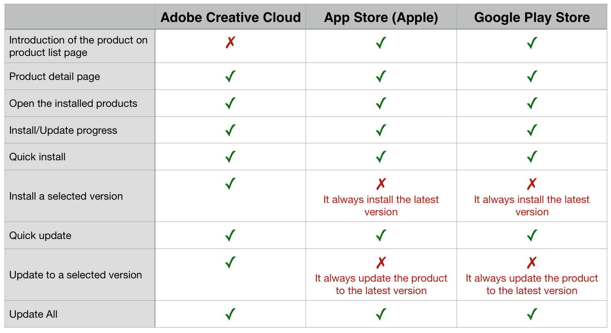

Autodesk WingMan Design Project
Prototype · UI/UX Design
Duration
Role
Tools
Overview
Research
Competitive Analysis
Software as a service (SaaS) was still a new topic when we did this project. To identify the standard features and some best practices, I started the project by competitive analysis. There were 3 indirect competitors: Adobe creative cloud, App Store (Apple), Google Play Store. They all solve the same problem as what we wanted to solve but serves different customers.
User Research
The competitive analysis helped me to identify some of the standard features. However, I decided to discover more about the functionality that allows users to install/update a product to a particular version. Thus I started to find more information on forums for Autodesk users. Seeking for related questions and answers and asking questions directly to the customers helped me to decide install/update a product to a particular version was indeed an essential feature. The customers of Autodesk products need a lot of collaboration in their work. Making sure they use the same version/ compatible versions of tools are crucial. Additionally, from my research, I also identified the key information users were looking for when they install/update Autodesk products.
Ideation
Expandable Card
The expandable card provides a clean UI and also to keep the customers focusing on the essential information. In case, the customers want to learn more about the product/update. They can click the `learn more` link to reveal relevant information.
Clear State
Depends on the state of the product, the CTA on each of the product cards could be: install, update, or launch. On installing/updating, a progress bar is showing to show the progress and the current state.
Digestible & trustworthy information
Based on my research on the forum, the customers tended to do a lot of research on the forum or other channels that they trusted before they install/update a product made by Autodesk. And generally, they prefer to read a summy in bullet points or watch a video. Thus, in my design, I also tried to include videos, reviews, and summary in bullet points.
Design + Prototype
What's next
Due to the time constraint, I didn't involve in the testing phase and cannot further improve my design. However, there were some of the areas I wanted to focus: 1) version management, the expandable panel was one of the solutions, but I am wondering if the user was able to link the arrow icon with more versions. 2) more information, I wanted to know if the information was sufficient, and if the presence of the information was easily digestible.
I am quite proud of the Project Wingman. It was my first UX project worked on. And Seeing my designs went to live one year after my internship finished was also one of the most unforgettable moments in my life.